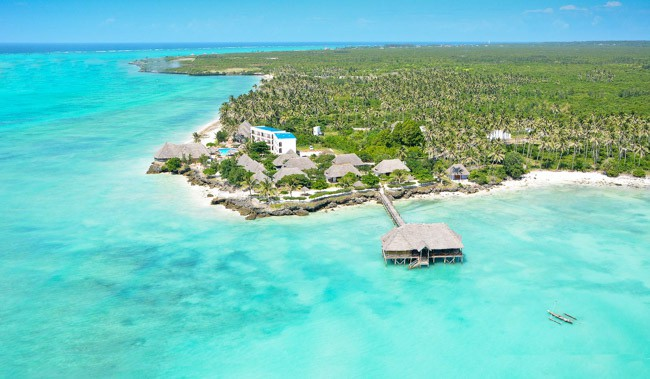

5 LUGARES QUE EU GOSTARIA DE CONHECER
por Raul Furtado
Zanzibar, Tanzânia

BREVE DESCRIÇÃO:
Unguja, também conhecida como Ilha de Zanzibar,
é a principal ilha do arquipélago tanzaniano de Zanzibar.
A Cidade de Pedra, que faz parte da Cidade de Zanzibar,
fica no antigo centro de trocas comerciais, com mesquitas e vias sinuosas.
PROXIMO LUGAR!